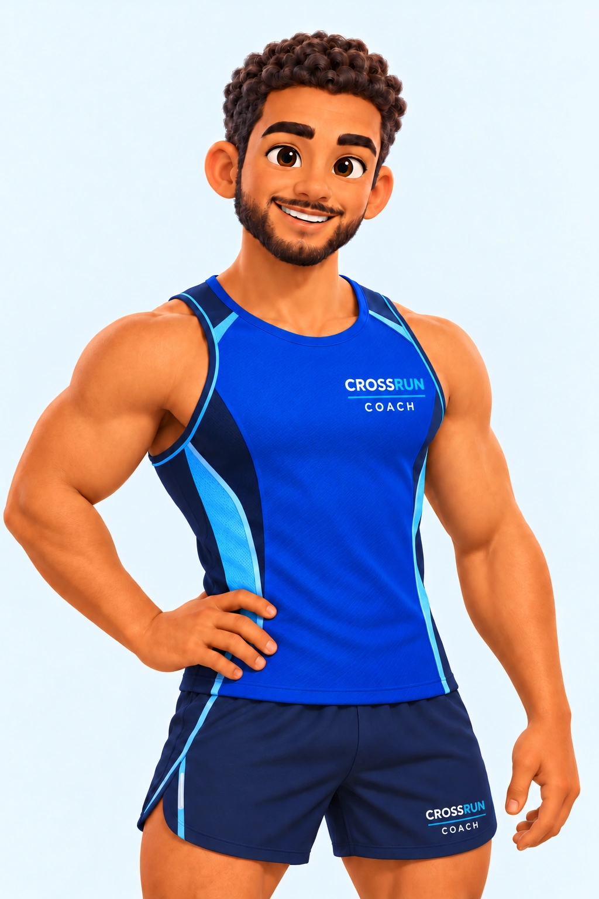
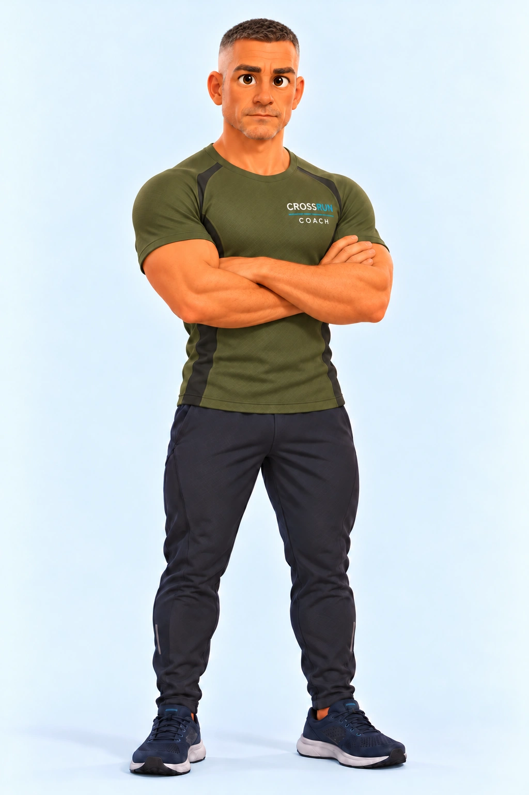

Noah
Allure · progressionPour franchir un cap, une séance après l’autre.
Indique ce que tu prépares, ton niveau et tes disponibilités. CrossRun t’aide à organiser tes prochaines séances.

UN PLAN QUI PART DE TOI
Définis l’objectif que tu veux préparer.
Organise tes séances selon ton emploi du temps.
Suis ton programme et vois les étapes déjà parcourues.
À CHACUN SON STYLE
Quatre approches pour trouver l’accompagnement qui te motive.

Pour franchir un cap, une séance après l’autre.

Pour construire une routine qui dure.
Pour prendre confiance et garder l’élan.

Pour garder un cadre clair et régulier.
CHAQUE SORTIE COMPTE
Ton historique garde tes courses. Tes records et tes badges marquent les étapes importantes. Et si tu veux courir en groupe, les défis ajoutent un objectif partagé.
Découvrir les défis de groupeDécouvre CrossRun sur iPhone ou rejoins les tests Android.
Bêta gratuite · 18 ans et plus